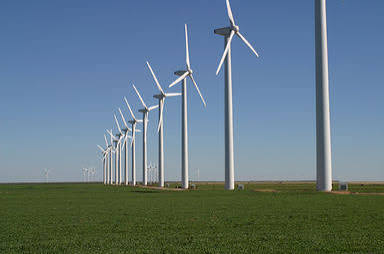
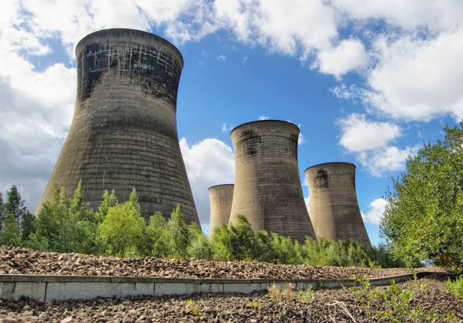

REFINING POWER
Insight driven engineering. Performance you can measure.
Precision Starts with
Diagnosis.
Yansa is a power quality engineering company built on diagnostic rigour. We go beyond standard electrical maintenance to measure, interpret, and resolve the power quality issues that erode equipment performance, inflate operational costs, and compromise the reliability your facility depends on.
Start With a DiagnosisSymptoms precede failure. Always.
Most industrial facilities experience at least one of these. Few connect them to the same root cause.
Recurring breaker trips?
Harmonic currents overload protective devices beyond their rated threshold. The breaker trips. The root cause stays.
Unexplained equipment overheating?
Distorted waveforms increase I²R losses in motors and transformers. Heat builds where it should not.
Rising kVAh billing?
Poor power factor increases reactive power demand. Utilities bill for it whether you notice it or not.
Premature capacitor failure?
Harmonic resonance stresses capacitor banks beyond design limits. They fail early and repeatedly.
These aren't anomalies. They are signals from a system under stress. Resolving them requires more than a quick fix it requires the kind of diagnostic precision that only dedicated power quality engineering can deliver.
Why Yansa?
Where most vendors arrive with a product, Yansa arrives with a process, one that begins with measurement and ends with certainty.
Data Before Direction.
We measure first. Every recommendation follows from what the system reveals.
System Level Thinking.
Every diagnosis maps the full electrical system, because that is where root causes live.
We Stay Until It's Solved.
Our engagement does not end at installation. It ends when the problem does.
Case Studies
Every engagement begins with a system under stress. These are what happened when we traced it to its source.
Placeholder. Summary copy for this case study goes here. Replace with the real text when you have it.
Discuss a similar problemPlaceholder. Summary copy for this case study goes here. Replace with the real text when you have it.
Discuss a similar problem
Placeholder. Summary copy for this case study goes here. Replace with the real text when you have it.
Discuss a similar problem